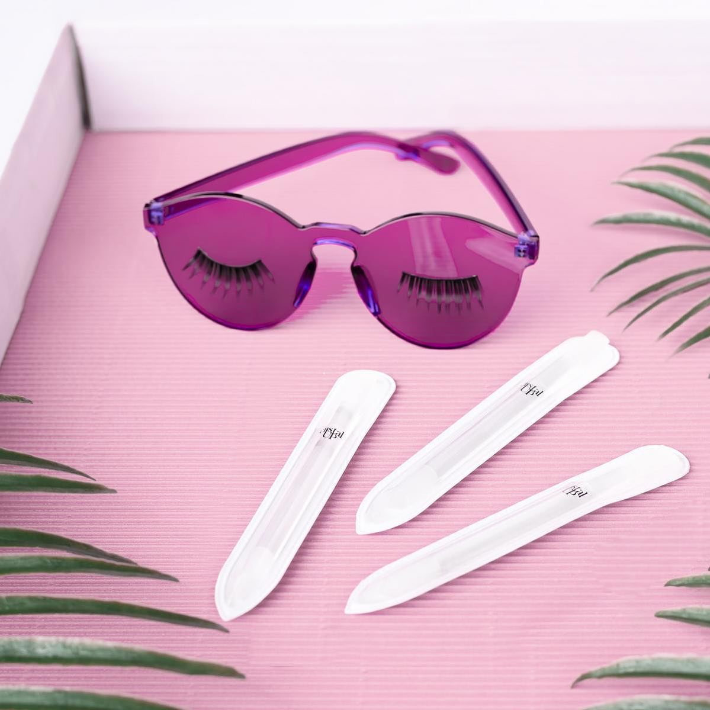
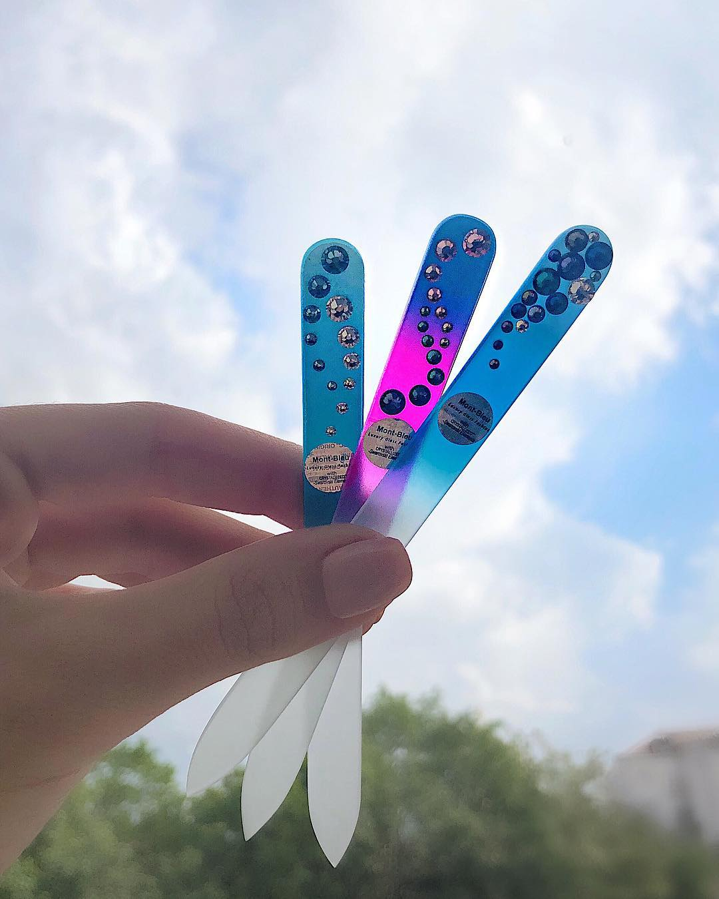

Limas para uñas de cristal, conoce los beneficios Son usadas por los profesionales de belleza para cuidar de la salud de las uñas
Tradicionalmente, las limas para uñas de cartón han sido las más utilizadas, una práctica que hemos visto en nuestras madres, abuelas y profesionales, y que nosotras hemos seguido al pie de la lista para mantener una manicura presentable. Ya sea por costumbre o por accesibilidad las limas de cartón han sido las más fuertes en su rubro.
Pero ahora, parece que se ha modificado esta percepción. Con la llegada de las limas para uñas de cristal y un uso cada día más cotidiano, además de los altos beneficios para la salud de tus uñas y del planeta, es usual ver a más chicas adeptas a ellas.
La idea de usar cristal como base para limas de uñas, surgió -y fue patentada- hace más de 50 años en Suiza. Su forma de elaboración consiste en tratar químicamente piezas de vidrio templadas, calentando el cristal hasta crear una pieza resistente de plástico muy densa.
Además de que la puedes utilizar tanto en uña natural como acrilica, su duración es larga -si la cuidas adecuadamente puede durar años-. Las limas de cristal para uñas -o de vidrio- a diferencia de las de cartón, que se doblan, despegan o rompen, cuentan con una textura arenosa mucha más suave y fina. Lo que las hace ideales para acabados más limpios sin bordes porosos o rasgados, lo que significa un menor número de rupturas y accidentes en tu manicura.
